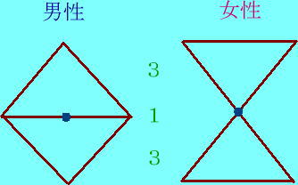
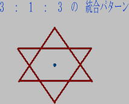

チャクラの開発方法
 
「チャクラ」という言葉は、精神世界やヨガ、気功をご存知の方は知っていると思います。
エスパー講座もそろそろ後半に入ってきました。
能力の開発においては、「チャクラ」は非常に重要なポイントとなってきます。
今回は、そのチャクラの原理と意識界との関わりをとらえた上で、最も効果的なチャクラ開発法を
ご紹介したいと思います。
“チャクラの原理”
チャクラとはいかなるものか？。
体の内分泌系と関連づけたり、「数霊」と関連づけたり、音や光、形などに関連づけたり、様々な解釈を
しておられることでしょう。
本当のチャクラのメカニズムを知らなければ、何らかのこじつけであったり、思いこみがあったりして、
充分にチャクラの機能を発揮させることはできません。
その本質を知らなければすべてが、空振りに終わってしまいます。
それでは、「チャクラとは何であるか。」説明いたしましょう。
「チャクラ」とは体の中の特定のポイントをチャクラと想定した場合、その想定したポイントがチャクラに
なりうるのです。
通常「チャクラは７つあると皆様は教えられております。
もし１０個あると思ったとき、実は１０個のチャクラができあがってしまいまうのです。
このために流派によってチャクラの位置や個数に違いや、解釈上の違いが発生してしまうことになります。
つまりどういうことかといいますと、「チャクラは意識の設定で作り上げられる、アストラル層、メンタル層における
創造物にすぎない」ということです。
多くの覚者、修行者が作り上げた体系をそのままあなたが受け入れたとき、そのシステムが発動を始める。
という原理からスタートしているのです。
とどのつまり、過去における既存のシステムの中へアクセスし始めたとき、既存のエネルギーメカニズムが発動を
始めるのです。
言い換えれば、集合無意識の中のチャクラシステムへつながったとき、それぞれのチャクラに意味づけられた機能が
発動する。ということなのです。
肉体の解剖学上からでは、チャクラが発見されないのは、それが意識の産物であるからです。
これらを前提にチャクラの開発方法についてお伝えいたしましょう。
“メカニズムについて”
人の体を縦ラインでみたとき、当然、足は大地に接触し、頭は天を向くことになります。
そうすると、この縦ライン上に電位差というものがおこります。
足よりも胸から頭部へ上がっていくほうが、電位は高くなってきます。
この電位差にチャクラの数だけ分割したとき、違ったレベルの電位差が生じることになります。
つまり、電圧の差というのは、物理的なメカニズムで起こることですが、
この違いが明確であれば、それぞれのポイントに対して、意識のトーンを変えることがたやすくなってまいります。
もし「７」という数字にチャクラをあてはめたときは、７つの異なったトーンを発生させることができます。
非常に明確なレベル差というものを体の上に再現させることができるのですからなのです。
（注：チャクラが７つあろうと、１０個あろうと、１２個あろうと、それはあなたがたの意識による設定で
いかようにも変えられるものであるからです。しかし本質的には足の部分と頭の部分の電位差を７，
１０、あるいは１２に分割したにすぎないのですから、７であろうと１２であろうと、どちらが
優れているということは言えないのです。結果的には同じであるのです。）
以上のメカニズムを理解した上で最も私たちがとらえやすい、７つのチャクラということを前提にその開発の
方法をお教えいたします。
それはこの７という数字に隠された重要な意味があるからです。
“実践編”
・メカニズムのところで述べました、７つのチャクラはハートのチャクラを中心にとらえたとき上に３つ、下に３つ
存在することになります。
上のチャクラと、下のチャクラはそれぞれ反対の極性をもチャクラとなります。
上の３つは、逆ピラミッド。それも上から下へ下降する性質を持ちます。
・そして、下のチャクラは、下から上昇する性質を持ちます。これは女性のチャクラシステムの原理です。
男性の場合は、これとは全く反対の性質を持っております。
男性は、上の３つのチャクラが、下から上へ上昇し、下の３つのチャクラは、上から下へ下降いたします。
この違いは図を参考にしてください。
ここに述べているチャクラのシステムは、古代の魔術にあったものです。
それをもっとわかりやすく説明しておきましょう。
これは７つのシステムの中に、１３のりズムが統合され、その中に五大要素を融合させる手法なのです。
一般書にいわれている、単独にチャクラを集中させて開発する手法ではありません。
単独に集中する開発法は、チャクラバランスを壊しやすく、完全な覚醒にはいたらないのです。
図にありますように、男性と女性は、極性が異なりますが、どちらの場合も三角形が二つ重なり合わされた
パターンを持っております。
この上部と下部のエネルギーを統合させ、完全バランスがとれてきますと、全体のチャクラもバランスよく
覚醒してくるのです。
一般にいう、単独のチャクラ集中法は、内分泌系のバランスを極度に壊していまい、自律神経失調症のような状態から
のがれられなくなってしまいます。
終いには、精神不安を招き、神経症を招く結果となってしまうからです。
・さて、二つのエネルギーを統合させる方法は、図を見ればわかるように、三角形が二つ重なっている状態ですが
ここに８の字が描かれていることが、おわかりになるでしょう。
メビウス（ ∞ ）状のループを8の字状に描いてみると、上部のループと下部のループが
重なり合って、六角形を作ります。ここに六の「数霊」が機能します。
つまり、ハートのチャクラを中心にして、８の字をぐるぐるとまわしてゆくと、完全に統合されたとき図形が、
六ぼう星を描いてゆきます。
これが、本当のチャクラの開発手法です。
７つのチャクラが、完全にバランスをとれたとき、六ぼう星がつくられるのです。
・以上の方法は、男性原理、女性原理、単独のみのエネルギー統合の手法です。
７つという数字に条件付けされたチャクラシステムは、体の中心部は、当然ハートのチャクラに位置することに
なります。
ハートを中心に上部に３つ、下部に３つのチャクラが配置されます。
３：１：３という比率が生まれます。
そうすると、上半身が、「３１」、下半身が「１３」という数霊のシステムが連動してくるのです。
つまり、この「１３」という数字のメカニズムがそのまま、チャクラの中に発動してくるのです。
「１３」というのは、宇宙のリズムそのもの。
それを「７」のシステムの中に融合させたもの、また別の見方をいたしますと、地球の基本要素となる
「空・風・地・火・水」の５大要素。プラス宇宙の理の要素である８＝メビウス・無限という概念にもつなげられます。
そうすると５＋８＝１３ということになります。
つまり、チャクラの７つというのは、宇宙の理とあなたがたの生活における７のリズムにぴったり合致する
システムであるといえるでしょう。
そのような意味においては７つのチャクラというのは、根拠のないことではないのです。
“応用編
・男性性、女性性、単独での手法では、「六ぼう星」という固定されたエネルギーパターンが、残存してしまいます。
この残存したエネルギーを完全なゼロ状態に転換しえたとき、人はアセンションしてゆきます。
・つまり、男性、女性のエネルギーの完全融合こそが、本当のチャクラ覚醒を達成できるのです。
自然界のリズムは１３のシステムが原則です。
チャクラの７と六角が足し合わされると１３のシステムが動いてきます。
つまり、男性性と女性性の融合においてのみ１３のシステムができあがるのです。
言い換えれば、単独で修行を積んだとしても、本当の意味の覚醒にはならないということをここに明らかにしたいと
思います。
この意味は、肉体を持つが故の制約でもあるのですが、男性、女性の融合によって、完全バランスがとれるという
二元性原理が地球人には働いているからです。
お互いに違う極性を持ち合わすことが出来るという長所は互いの調和によって、さらなる覚醒をもたらすことが
出来るという天の摂理のギフトであると思ってください。
そこには、お互いの理解と方向性、意識、霊性の完全一致が必要となるのです。
その根底となるものには、愛がなくしては成し得ないのです。
そこにおいての最も重要なポイントはパートナーに恵まれない限り本当の覚醒は得られないということです。
言い換えれば、男性と女性の完全なる融合があれば、特別の修行をしなくてもチャクラは覚醒するということなのです。
そのために二元性原理が機能しているのです。
すべては、覚醒のために必要なこと。
そういう意味において男性、女性のバランスがすべてを支配しているという証にもなるのです。
参考： ベストパートナーが得られない場合に男性性原理、女性性原理を自動的に融合させチャクラの
開発を促すのを目的とした「融合」というエネルギーＣＤがあります。
またクンダリーニの自動上昇を促して、早く覚醒に導くためのエネルギーＣＤに
「エリクシア」というのがあります。特別注文のみ限定でお作りいたします。
ご関心がありましたら、お問い合わせください。
Source: http://www.nersrch.net/esp9.htm